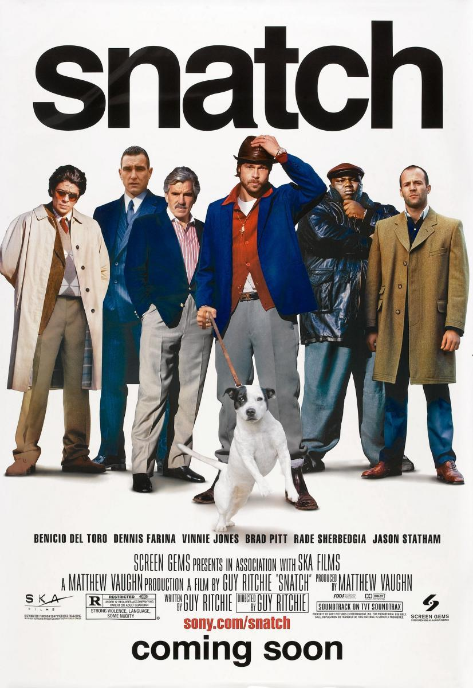

Mis películas favoritas
Pulp Fiction

Sinopsis:
Jules y Vincent, dos asesinos a sueldo con no demasiadas luces, trabajan para el gángster Marsellus Wallace. Vincent le confiesa a Jules que Marsellus le ha pedido que cuide de Mia, su atractiva mujer. Jules le recomienda prudencia porque es muy peligroso sobrepasarse con la novia del jefe. Cuando llega la hora de trabajar, ambos deben ponerse "manos a la obra". Su misión: recuperar un misterioso maletín.
Director:
Quentin Tarantino
Reparto:
- John Travolta
- Samuel L. Jackson
- Uma Thurman
- Bruce Willis
- Ving Rhames
- Harvey Keitel
- Tim Roth
- Amanda Plummer
- ...
Kill Bill: Volumen 1
Sinopsis:
El día de su boda, una asesina profesional (Thurman) sufre el ataque de algunos miembros de su propia banda, que obedecen las órdenes de Bill (David Carradine), el jefe de la organización criminal. Logra sobrevivir al ataque, aunque queda en coma. Cuatro años después despierta dominada por un gran deseo de venganza.
Director:
Quentin Tarantino
Reparto:
- Uma Thurman
- Lucy Liu
- Daryl Hannah
- Vivica A. Fox
- Sonny Chiba
- Chiaki Kuriyama
- Michael Bowen
- Julie Dreyfus
- Michael Parks
- David Carradine
- ...
Los Goonies
Sinopsis:
Mikey es un niño de trece años que junto con su hermano mayor y sus amigos forman un grupo que se hacen llamar "los Goonies". Un día deciden subir al desván de su casa, donde su padre guarda antigüedades. Allí encuentran el mapa de un tesoro perdido que data del siglo XVII, de la época de los piratas, y deciden salir a buscarlo repletos de espíritu aventurero.
Director:
Richard Donner
Reparto:
- Sean Astin
- Corey Feldman
- Josh Brolin
- Martha Plimpton
- Joe Pantoliano
- Kerri Green
- Jeff Cohen
- Jonathan Ke Quan
- Anne Ramsey
- John Matuszak
- ...
No es país para viejos

Sinopsis:
En 1980, en la frontera de Texas, cerca de río Grande, Llewelyn Moss (Josh Brolin), un cazador de antílopes, descubre a unos hombres acribillados a balazos, un cargamento de heroína y dos millones de dólares en efectivo.
Directores:
Los hermanos Coen: Joel Coen, Ethan Coen
Reparto:
- Josh Brolin
- Tommy Lee Jones
- Javier Bardem
- Kelly MacDonald
- Woody Harrelson
- ...
Snatch: cerdos y diamantes
Sinopsis:
Franky es un ladrón de diamantes que tiene que entregar un valioso ejemplar a su jefe Avi, pero, antes de hacerlo, se deja convencer por un tal Boris para apostar en un combate ilegal de boxeo. En realidad, se trata de una trampa para arrebatarle el diamante. Cuando Avi se entera, contrata a Tony para encontrar a Franky y al diamante. Descubierto el triste destino de Franky, la recuperación de la gema desaparecida provoca una situación caótica, donde el engaño, el chantaje y el fraude se mezclan de forma sangrienta con perros, diamantes, boxeadores y gran variedad de armas.
Director:
Guy Ritchie
Reparto:
- Jason Statham
- Stephen Graham
- Brad Pitt
- Alan Ford
- Vinnie Jones
- Rade Serbedzija
- Dennis Farina
- Benicio del Toro
- ...